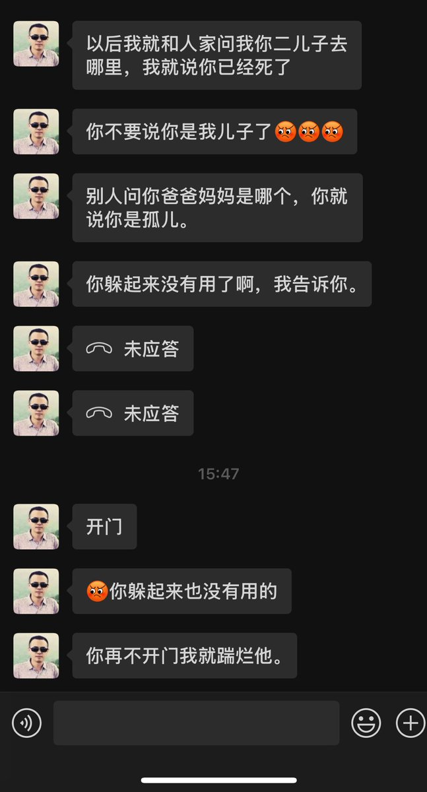

🧊沫柠～🍋🍥
@Moningmeng
RT @bernadine18107: 我真是不知道怎么和他们沟通了😔 本想在外面躲一躲晚点再回家 没想到居然七点了我爸妈还在我家门口等着我 我打开房门的一瞬间 我爸就狠狠踹了我一脚 措不及防摔倒了 一脚又一脚往我脸上踹 嘴里说着让我去死的话 我妈冲进我的房间把化妆品都砸了还有…

Niqiu-妮湫（打工版）🏳️⚧️🍥
@bernadine18107
我真是不知道怎么和他们沟通了😔 本想在外面躲一躲晚点再回家 没想到居然七点了我爸妈还在我家门口等着我 我打开房门的一瞬间 我爸就狠狠踹了我一脚 措不及防摔倒了 一脚又一脚往我脸上踹 嘴里说着让我去死的话 我妈冲进我的房间把化妆品都砸了还有衣服也被丢了 我爸发了疯似的拿剪刀要剪我的头发 https://t.co/5tRfoRGLOz